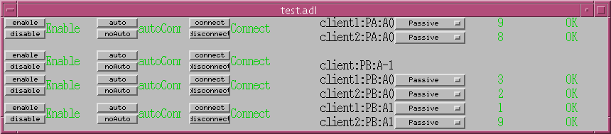

asynDriver: Asynchronous Driver Support
Release 2.1
Marty Kraimer, Eric Norum, and Mark Rivers
March 2004
License Agreement
This product is available via the open source
license described at the end of this document.
Contents
Purpose
Status
Acknowledgments
Overview of asynDriver
Structures and Interfaces
Theory of Operation
Generic Record/Device Support
Example
Test Example
asynGpib
Port Drivers
Diagnostic Aids
Install and Build
Purpose
asynDriver is a general purpose facility for interfacing device specific
code to low level communication drivers.
A primary target for asynDriver is EPICS IOC device support but, other
than using libCom, it is independent of EPICS.
The following are some of the existing EPICS general purpose device
support systems that have been converted to use asynDriver.
- gpibCore is the operating-system-independent version of the
Winans/Franksen GPIB support.
- mpfSerial is the serial support provided with MPFOSI (Message Passing
Facility)
The following are some of the existing EPICS general purpose device
support systems that could be converted to use asynDriver.
- streams is the protocol file based support for serial/GPIB/CAN from
Dirk Zimoch.
- devAscii/drvAscii is serial support from KECK Observatory.
Each of these systems is used at EPICS facilities for accessing GPIB
and/or serial devices. Because device support has been written for many
instruments and thousands of database records use the device support, users
will not be easily persuaded to switch from their existing solution. Thus
asynDriver implements a framework below device support that can be used by
all of the above systems so that all can share the same drivers.
Each system needs to be modified so that the device support component is
compatible with existing use but replace the driver part with asynDriver. The
benefit is that all could share the same set of low level drivers.
gpibCore and mpfSerial have already been converted and is included with
asynDriver.
Hopefully Dirk Zimoch will get time soon to convert streams and Allen
Honey time to convert devAscii.
In the future other protocols will be supported especially for Ethernet
based devices.
Status
This version provides
- asynManager, i.e. the software layer between device support and
drivers.
- asynOctetRecord: EPICS record support that provides a generic interface
to asynDriver.
- devAsyn and devAsynGeneric: EPICS device support for connection
management and for the Trace Facility.
- devGpib: EPICS device support that replaces the device support layer of
the Winans/Franksen gpibCore support.
- asynGpib: a replacement for the drvGpibCommon layer of the Franksen
gpibCore support.
- genericSerial: Support for devices connected to serial ports, devices
connected through Ethernet/Serial converter boxes, and TCP/IP sockets.
- vxi11: A replacement for the vxi11 support of the Franksen gpibCore
support.
- gsIP488: A low level driver for the Greensprings IP488 Industry Pack
module. This support is only implemented for vxWorks.
Acknowledgments
The idea of creating asynDriver resulted from many years of experience
with writing device support for serial and GPIB devices. The following
individuals have been most influential.
- John Winans
- John provided the original EPICS GPIB support. Databases using
John's support can be used without modification with devGpib. With
small modifications, device support modules written for John's support
can be used.
- Benjamin Franksen
- John's support only worked on vxWorks. In addition the driver support
was implement as a single source file. Benjamin defined an interface
between drvCommon and low level controllers and split the code into
drvGpib and the low level drivers. He also created the support for
drvVxi11.
- Eric Norum
- Eric started with Benjamin's code and converted it to use the
Operating System Independent features of EPICS 3.14.
- Marty Kraimer
- Marty started with Eric's version and made changes to support
secondary addressing and to replace ioctl with code to support general
bus management, universal commands, and addressed commands.
- Pete Owens
- Pete, for the Diamond Light Source, did a survey of several types of
device/driver support packages for serial devices. Diamond decided to
use the streams support developed by Dirk Zimoch.
- Dirk Zimoch
- Dirk developed streams, which has a single device support model, but
supports arbitrary low level message based drivers, i.e. GPIB, serial,
etc.
- Jun-ichi Odagare
- Jun-ichi developed NetDev, a systems that provides EPICS device
support for network based devices. It has a single device support model
but provides a general framework for communicating with network based
devices.
Overview of asynDriver
asynDriver is a software layer between device specific code and
communication drivers that send/receive messages to/from devices. asynDriver
defines the following terminology:
- interface
All communication between software layers is done via interfaces. An
interface definition is a C language structure consisting entirely of
function pointers. An asynDriver interface is analogous to a C++ or Java
pure virtual interface. Although the implementation is in C, the spirit
is object oriented. Thus this document uses the term "member" rather than
"function pointer".
- port
A communication entity over which messages are sent. Whenever this
document uses the word port without a qualifier, it means a communication
port. A port provides access to one or more devices.
- device
A device (instrument) connected to a port. For example if the port
driver is a GPIB interface it can have up to 15 devices connected to each
port. Whenever this document uses the word device without a quailifier,
it means something that is connected to a port.
- asynDriver
This is the name for the support described in this manual. It is also
the name of the header file that describes the core interfaces
- asynManager
The code implements the methods in interfaces asynManager and
asynTrace..
Standard interfaces are defined so that most device specific code can
communicate with multiple port drivers. If device support does all it's
communication via reads and writes of messages consisting of 8 bit bytes
(octets) then it should work with almost all port drivers. If device support
requires more complicated support then the types of ports will be more
limited. Additional interfaces can also be defined.
Examples of ports are GPIB controllers, serial ports, Ethernet ports, etc.
One or more devices can be attached to a port. For example only one device
can be attached to an RS-232 port but up to 15 devices can be attached to a
GPIB port.
Multiple layers can exist between device specific code and a port driver.
A software layer calls interposeInterface in order to be placed between
device specific code and drivers.
For more complicated protocols additional layers can be created. For
example GPIB support is implemented as an asynGpib interface which is called
by user code and a asynGpibPort interface which is called by asynGpib.
A driver can implement multiple interfaces. For example asynGpib
implements asynCommon, asynOctet, and asynGpib.
asynManager uses the Operating System Independent features of EPICS base.
It is, however, independent of record/device support. Thus it can be used by
other code, e.g. a sequence program.
Standard Asynchronous Driver Interfaces
This section briefly describes the interfaces provided by asynManager and
standard interfaces implemented by port drivers. asynManager members are
called by normal threads. Except for asynCommon:report, port driver methods
can only be called from the user supplied callback that is called by the
thread associated with each port.
The interfaces are:
- asynManager This provides
services for communicating with a device connected to a port. The
following services are provided
- report - A method that reports the status of all ports.
- A thread for each communication port.
- Methods to connect/disconnect to a device or port.
- A method for locating port driver interfaces.
- queueRequest. This is a non-blocking method, i.e. it can be called
from scan threads. A callback specified by the user is called by the
interface thread. The user callback can then make an arbitrary number
of calls to the driver. These calls may be blocking calls.
- Methods that provide a transaction service, i.e. members
lock/unlock can lock out other users while multiple queueRequests are
issued.
- Methods for registering ports and interfaces.
- Methods called by a driver when it connects or disconnects from a
port or device.
- A Method for interposing an interface between clients and
drivers.
- Methods for enable and autoConnect.
- asynCommon asynCommon is a set
of methods that must be implemented by all drivers. The methods are:
- report - Report status of port.
- connect - Connect to the port or device.
- disconnect - Disconnect from the port or device.
- setOption - Set device option.
- showOption - Show device option.
- asynOctet asynOctet is a set of
methods implemented by any driver that accepts octet messages (messages
consisting of 8-bit bytes) and returns octet responses. This interface
will be sufficient for most device specific code. For example the code
for streams protocol files needs only this interface. The term octet is
used instead of ASCII because the only requirement is that messages
consist of 8-bit bytes. The methods are:
- read - input a message. The routine returns the number of 8-bit
bytes read from the device or -1 to indicate error.
- write - output a message. The routine returns the number of 8-bit
bytes written to the device or -1 to indicate error.
- flush - if input is buffered flush the buffer.
- setEos - Specify an end of message string for detecting the end of
input messages.
- getEos - Get the currect end of message string.
- asynTrace asynTrace is a set of
methods for generating diagnostic messages.
- asynSyncIO
asynSyncIO is a set of
methods for performing synchronous I/O using asynManager and asynOctet. This interface
is convenient for code that is running in a thread that is allowed to wait.
Examples include motor drivers, SNL programs and the shell commands described
later in this document. The methods are:
- connect - connect to a device and port, create asynUser for use by
other methods.
- connectSocket- connect to a TCP/IP socket and port, create an asyn
port, create asynUser for use by other methods.
- read - read device, wait for response. Optionally flush input before
the read, and optionally set end of message string. The routine returns
the number of 8-bit bytes read from the device or -1 to indicate error.
- write - write device, wait for response. The routine returns the
number of 8-bit bytes written to the device or -1 to indicate error.
- writeRead - perform a "write" and then a "read" as an atomic
operation. The routine returns the number of 8-bit bytes read from the
device or -1 to indicate error.
- flush - if input is buffered flush the buffer, wait for completion.
Overview
During initialization a driver registers each communication port as well
as all supported interfaces.
User code creates an asynUser by calling pasynManager->createAsynUser(). The
address of the asynUser is passed to most other asynDriver methods.
User code connects to a device, which is located located at some address
on a port, and communicates with the device via combination of asynManager
and one or more interfaces.
User code communicates with drivers via the following method:
- It calls:
pasynManager->queueRequest(...)
- The callback specified in createAsynUser calls the driver via one of
the driver interfaces.
Comments:
- Streams, devAscii, and mpfSerial need only asynManager and asynOctet.
devGpib needs only asynManager, asynCommon, asynOctet, and asynGpib.
- It is expected that most users will connect to these interfaces via
device support. However other code can call it. Examples are sequence
programs, test programs, utility commands, etc.
- Device support can consist of more than one type of support. For
example most functions could be accessed via streams but asynGpib could
be used to handle SRQs.
Structures and Interfaces
asynDriver.h describes the following:
- asynStatus - An enum that describes the status returned by many
methods.
- asynException - An enum that describes exceptions.
- asynQueuePriority - An enum that describes the queue priorities,
- asynUser - A struture that contains generic information.
- asynInterface - a structure that describes an interface.
- asynManager - An interface for communicating with asynDriver.
- asynCommon - An interface providing device methods invoked by queue
callbacks. All low level drivers should implement these methods.
- asynOctet - An interface providing device methods that most low level
drivers implement.
- asynTrace - An interface plus associated functions and definitions that
implement the trace facility.
asynSyncIO.h describes the following:
- asynSyncIO - An interface for performing synchronous I/O using the
asynManager and asynOctet interfaces.
asynStatus
Thus defines the status returned by most methods If a method returns a
status other than asynSuccess and one of the arguments to the method is
pasynUser then the method is expected to write a message into
pasynUser->errorMessage.
typedef enum {
asynSuccess,asynTimeout,asynOverflow,asynError
}asynStatus;
asynStatus
| asynSuccess |
The request was successfull. |
| asynTimeout |
The request failed with a timeout. |
| asynOverflow |
The caller did not supply a buffer large enough to hold all input.
What happens to the remaining bytes depends on the low level
driver. |
| asynError |
Some other error occured. |
asynException
This defines a set of exceptions for method exceptionOccurred
typedef enum {
asynExceptionConnect,asynExceptionEnable,asynExceptionAutoConnect
} asynException;
asynException
| asynExceptionConnect |
The connection state of the port or device has changed. |
| asynExceptionEnable |
The enable state of the port or device has changed. |
| asynExceptionAutoConnect |
The autoConnect state of the port or device has changed. |
asynQueuePriority
This defines the priority passed to queueRequest.
typedef enum {
asynQueuePriorityLow,asynQueuePriorityMedium,asynQueuePriorityHigh,asynQueuePriorityConnect
}asynQueuePriority;
asynQueuePriority
| asynQueuePriorityLow |
Lowest queue priority. |
| asynQueuePriorityMedium |
Medium queue priority. |
| asynQueuePriorityHigh |
High queue priority. |
| asynQueuePriorityConnect |
Queue a connect or disconnect request. This priority must not be
used only for connect/disconnect requests. |
asynUser
asynUser describes a structure that user code must provide for most
asynManager and driver methods. Code must allocate and free an asynUser by
calling asynManager:createAsynUser and asynManager:freeAsynUser.
typedef struct asynUser {
char *errorMessage;
int errorMessageSize;
/* The following must be set by the user */
double timeout; /*Timeout for I/O operations*/
void *userPvt;
}asynUser;
asynUser
| errorMessage |
When either asynManager or a driver returns an error, it should
put an error message into errorMessage via a call to
epicsSnprintf(pasynUser->errorMessage,pasynUser->errorMessageSize,"<format>",...)
|
| errorMessageSize |
The size of errorMessage. The user can not change this value. |
| timeout |
The number of seconds before timeout for I/O requests. This is set
by the user and can be changed between calls to drivers. The user
must provide a non zero value or many low level drivers will timeout.
A timeout value < 0.0 means wait forever. |
| puserPvt |
For use by the user. The user should set this immediately after the
call to pasynManager->createAsynUser. If this is changed while
asynUser is queued, the results are undefined, e.g. it could cause a
crash. |
asynInterface
This defines an interface registered with asynPortManager:registerPort or
asynManager:interposeInterface.
typedef struct asynInterface{
const char *interfaceType; /*For example asynCommonType*/
void *pinterface; /*For example pasynCommon */
void *drvPvt;
}asynInterface;
asynInterface
| interfaceType |
A character string describing the interface. |
| pinterface |
A pointer to the interface. The user must cast this to the correct
type. |
| drvPvt |
For the exclusive use of the code that called registerPort or
interposeInterface. |
asynManager
This is the main interface for communicating with asynDriver.
typedef void (*userCallback)(asynUser *pasynUser);
typedef void (*exceptionCallback)(asynUser *pasynUser,asynException exception);
typedef struct asynManager {
void (*report)(FILE *fd,int details);
asynUser *(*createAsynUser)(userCallback queue,userCallback timeout);
asynStatus (*freeAsynUser)(asynUser *pasynUser);
asynStatus (*isMultiDevice)(asynUser *pasynUser,
const char *portName,int *yesNo);
/* addr = (-1,>=0) => connect to (port,device) */
asynStatus (*connectDevice)(asynUser *pasynUser,
const char *portName,int addr);
asynStatus (*disconnect)(asynUser *pasynUser);
asynStatus (*exceptionCallbackAdd)(asynUser *pasynUser,
exceptionCallback callback);
asynStatus (*exceptionCallbackRemove)(asynUser *pasynUser);
asynInterface *(*findInterface)(asynUser *pasynUser,
const char *interfaceType,int interposeInterfaceOK);
asynStatus (*queueRequest)(asynUser *pasynUser,
asynQueuePriority priority,double timeout);
/*cancelRequest returns (-1,0,1) if request (had error, was not, was) queued*/
int (*cancelRequest)(asynUser *pasynUser);
asynStatus (*lock)(asynUser *pasynUser); /*lock portName,addr */
asynStatus (*unlock)(asynUser *pasynUser);
/*getAddr returns -1 if !multiPort or connected to port */
int (*getAddr)(asynUser *pasynUser);
/* drivers call the following*/
asynStatus (*registerPort)(const char *portName,
int multiDevice,int autoConnect,
unsigned int priority,unsigned int stackSize);
asynStatus (*registerInterface)(const char *portName,
asynInterface *pasynInterface);
asynStatus (*exceptionConnect)(asynUser *pasynUser);
asynStatus (*exceptionDisconnect)(asynUser *pasynUser);
/*any code can call the following*/
asynStatus (*interposeInterface)(const char *portName, int addr,
asynInterface *pasynInterface,
asynInterface **ppPrev);
asynStatus (*enable)(asynUser *pasynUser,int yesNo);
asynStatus (*autoConnect)(asynUser *pasynUser,int yesNo);
int (*isConnected)(asynUser *pasynUser);
int (*isEnabled)(asynUser *pasynUser);
int (*isAutoConnect)(asynUser *pasynUser);
}asynManager;
epicsShareExtern asynManager *pasynManager;
asynManager
| report |
Reports status about the asynPortManager. It also calls
asynCommon:report for each registered port driver. |
| createAsynUser |
Creates an asynUser. The caller specifies two callbacks, one for
successful queueRequests and one if a queueRequest has a timeout. The
timeout callback is optional. If it is not provided and a
queueRequest with a non-zero timeout is requested, an error message
is issued and no timeout will occur. errorMessageSize characters are
allocated for errorMessage. The amount of storage can not be changed.
This method doesn't return if it is unable to allocate the
storage. |
| freeAsynUser |
Free an asynUser. The user must free it only via this call. The
call will fail if the asynUser is connected to a device. |
| isMultiDevice |
Does the port support multiple devices? This method can be called
before calling connectDevice. |
| connectDevice |
Device code calls this to connect to a device. It passes the name
of the communication port and the address of the device. The port
Name is the same as that specified in the call to registerPort. The
call will fail if the asynUser is already connected to a device. If
the port does not support multiple devices than addr is ignored. The
call will fail if the asynUser is already connected to a device.
connectDevice only connects a user to the port driver for
the portName,addr. The port driver may or may not be connected to the
actual device. Thus connectDevice and asynCommon:connect are completely
different. |
| disconnect |
Disconnect from the port,addr to which connectDevice connected.
The call will fail if the asynUser is queued or locked
or has an exception callback.
Note that asynManager:disconnect and asynCommon:disconnect
are completely different.
|
| exceptionCallbackAdd |
The callback will be called whenever one of the exceptions defined
by asynException occurs. The callback can call isConnected,
isEnabled, or isAutoConnect to find the new state. |
| exceptionCallbackRemove |
The callback is removed. This must be called before disconnect. |
| findInterface |
Find a driver interface. If interposeInterfaceOK is true then
findInterface returns the last interface registered or interposed.
Otherwise the interface registered by registerPort is returned. It
returns 0 if the interfaceType is not supported.
The user needs the address of the drivers interface and the
address of pdrvPvt so that calls can be made to the driver. For
example:
asynInterface *pasynInterface;
asynOctet *pasynOctet;
void *pasynOctetPvt;
...
pasynInterface = pasynManager->findInterface(
pasynUser,asynOctetType,1);
if(!pasynInterface) { /*error do something*/}
pasynOctet = (asynOctet *)pasynInterface->pinterface;
pasynOctetPvt = pasynInterface->pdrvPvt;
/* The following call must be made from a callback */
pasynOctet->read(pasynOctetPvt,pasynUser,...
|
| queueRequest |
A device support thread never calls a driver directly. Instead it
calls queueRequest. After the thread associated with the port takes
this request from the queue, it calls the queue callback specified in
the call to createAsynUser. The callback makes calls to the driver.
If the asynUser is already on a queue, asynError is returned. The
timeout starts when the request is queued. A value less than or equal
to 0.0 means no timeout. The request is removed from the queue before
the callback is called. Thus callbacks are allowed to unlock and
issue new queue requests. |
| cancelRequest |
If a asynUser is queued remove it from the queue. If it is not on a
queue nothing is done. In particular if the callback is active, this
call has no effect. A return value of (0,1) means that a request (was
not, was) canceled, i.e. removed from the queue. |
| lock/unlock |
lock/unlock are used to block other users from accessing a device
while a user is making a series of queueRequests. Only the
addr specified in the connectDevice request is locked. asynManager
locks when a queueRequest for is taken from the
queue. At that point all other entries in the queue must wait until
unlock is called by the same pasynUser that locked. lock/unlock fail
if a request is currently queued. The addr argument passed to
connectDevice determines if the port or only a device is locked. |
| getAddr |
The value returned is -1 if the port does not support multiple
devices or else returns the addr that was specified in the call to
connectDevice. |
| registerPort |
This method is called by drivers. A call is made for each
communication interface instance. multiDevice is (0,1) of the driver
(does not, does) support multiple devices. autoConnect is (0,1) for
(no,yes). This provides the initial value for the port and all
devices connected to the port.
If priority is 0 then a default will be assigned. If
stackSize is 0 a default is assigned. The portName argument specifies
the name by which the upper levels of the asyn code will refer to
this communication interface instance. |
| registerInterface |
This is called by port drivers for each supported interface. |
| exceptionConnect |
This method must be called by the driver when and only when it
connects to a port or device. |
| exceptionDisconnect |
This method must be called by the driver when and only when it
disconnects from a port or device. |
| interposeInterface |
This is called by a software layer between client code and the port
driver. For example if a device echos writes then a software module
that issues a read after each write could be created and call
interposeInterface for interface asynOctet.
Multiple interposeInterface calls for a port/addr/interface can be
issued. *ppPrev is set to the address of the previous asynInterface.
Thus the software module that last called interposeInterface is
called by user code. It in turn can call the software module that was
second last to call interposeInterface. This continues until the
actual port driver is called.
interposeInterface can also be called with an asynInterface that
has not been previously registered or replaced. In this case *ppPrev
will be null. Thus new interfaces that are unknown to the low level
driver can be implemented.
|
| enable |
If enable is set yes than queueRequests are not dequeued unless
their queue timeout occurs. |
| autoConnect |
If autoConnect is true when a request is taken from a queue and the
port or device is not connected, asynManager calls
pasynCommon->connect. See the discussion of Flow of Control below
for details. |
| isConnected |
Returns (0,1) if the port or device (is not, is) connected. |
| isEnabled |
Returns (0,1) if the port or device (is not, is) enabled. |
| isAutoConnect |
Returns (0,1) if the portThread (will not, will) autoConnect for
the port or device. |
asynCommon
/* Device Interface supported by ALL asyn drivers*/
#define asynCommonType "asynCommon"
typedef struct asynCommon {
void (*report)(void *drvPvt,FILE *fd,int details);
/*following are to connect/disconnect to/from hardware*/
asynStatus (*connect)(void *drvPvt,asynUser *pasynUser);
asynStatus (*disconnect)(void *drvPvt,asynUser *pasynUser);
/*The following are generic methods to set/get device options*/
asynStatus (*setOption)(void *drvPvt, asynUser *pasynUser,
const char *key, const char *val);
asynStatus (*getOption)(void *drvPvt, asynUser *pasynUser,
const char *key, char *val, int sizeval);
}asynCommon;
asynCommon describes the methods that are optionally implemented by
drivers.
asynCommon
| report |
Generates a report about the hardware device. This is the only
asynCommon method that does not have to be called by the queueRequest
callback. |
| connect |
Connect to the hardware device or communication path. |
| disconnect |
Disconnect from the hardware device or communication path. |
| setOption |
This is a generic routine for setting a device option. The
arguments are a key,value pairs. The meaning is port driver
specific. |
| getOption |
This is a generic routine for getting a device option. The value
for the key is written into val. |
asynOctet
/* Device Interface supported by low level octet drivers. */
#define asynOctetType "asynOctet"
typedef struct asynOctet{
int (*read)(void *drvPvt,asynUser *pasynUser,
char *data,int maxchars);
int (*write)(void *drvPvt,asynUser *pasynUser,
const char *data,int numchars);
asynStatus (*flush)(void *drvPvt,asynUser *pasynUser);
asynStatus (*setEos)(void *drvPvt,asynUser *pasynUser,
const char *eos,int eoslen);
asynStatus (*getEos)(void *drvPvt,asynUser *pasynUser,
char *eos, int eossize, int *eoslen);
}asynOctet;
NOTE: The name octet is used instead of ASCII because it implies that
communication is done via 8-bit bytes.
asynOctet describes the methods implemented by drivers that use octet
strings for sending commands and receiving responses from a device.
asynOctet
| read |
Read a message from the device. The routine returns the number of
8-bit bytes read from the device or -1 to indicate error. |
| write |
Send a message to the device. The routine returns the number of
8-bit bytes sent to the device or -1 to indicate error. |
| flush |
Flush the input buffer. |
| setEos |
Set End Of String. For example "\n". Note that gpib drivers usually
accept at most a one character string. |
| getEos |
Get the current end of string. |
Trace Interface
/*asynTrace is implemented by asynManager*/
/*All asynTrace methods can be called from any thread*/
/* traceMask definitions*/
#define ASYN_TRACE_ERROR 0x0001
#define ASYN_TRACEIO_DEVICE 0x0002
#define ASYN_TRACEIO_FILTER 0x0004
#define ASYN_TRACEIO_DRIVER 0x0008
#define ASYN_TRACE_FLOW 0x0010
/* traceIO mask definitions*/
#define ASYN_TRACEIO_NODATA 0x0000
#define ASYN_TRACEIO_ASCII 0x0001
#define ASYN_TRACEIO_ESCAPE 0x0002
#define ASYN_TRACEIO_HEX 0x0004
/* asynPrint and asynPrintIO are macros that act like
int asynPrint(asynUser *pasynUser,int reason, const char *format, ... );
int asynPrintIO(asynUser *pasynUser,int reason,
const char *buffer, int len, const char *format, ... );
*/
typedef struct asynTrace {
/* lock/unlock are only necessary if caller performs I/O other then*/
/* by calling asynTrace methods */
asynStatus (*lock)(asynUser *pasynUser);
asynStatus (*unlock)(asynUser *pasynUser);
asynStatus (*setTraceMask)(asynUser *pasynUser,int mask);
int (*getTraceMask)(asynUser *pasynUser);
asynStatus (*setTraceIOMask)(asynUser *pasynUser,int mask);
int (*getTraceIOMask)(asynUser *pasynUser);
asynStatus (*setTraceFILE)(asynUser *pasynUser,FILE *fd);
FILE *(*getTraceFILE)(asynUser *pasynUser);
asynStatus (*setTraceIOTruncateSize)(asynUser *pasynUser,int size);
int (*getTraceIOTruncateSize)(asynUser *pasynUser);
int (*print)(asynUser *pasynUser,int reason, const char *pformat, ...);
int (*printIO)(asynUser *pasynUser,int reason,
const char *buffer, int len,const char *pformat, ...);
}asynTrace;
epicsShareExtern asynTrace *pasynTrace;
asynTrace
asynDriver provides a trace facility with the following attributes:
- Tracing is turned on/off for individual devices, i.e. a
portName,addr
- Trace has a global trace mask for asynUsers
not connected to a port ot port,addr.
- The output is sent to a file or to stdout.
- A mask determines the type of information that can be displayed. The
various choices can be ored together.
- ASYN_TRACE_ERROR Run time errors are reported, e.g. timeouts.
- ASYN_TRACEIO_DEVICE High level device support reports I/O
activity.
- ASYN_TRACEIO_FILTER Any layer between device support and the low
level driver reports any filtering it does on I/O.
- ASYN_TRACEIO_DRIVER Low level driver reports I/O activity.
- ASYN_TRACE_FLOW Report logic flow. Device support should report all
queue requests, callbacks entered, and all calls to drivers. Layers
between device support and low level drivers should report all calls
they make to lower level drivers. Low level drivers report calls they
make to other support.
- Another mask determines how message buffers are printed. The various
choices can be ored together.
- ASYN_TRACEIO_NODATA Dont print any data from the message
buffers
- ASYN_TRACEIO_ASCII Print with a "%s" style format.
- ASYN_TRACEIO_ESCAPE Call epicsStrPrintEscaped.
- ASYN_TRACEIO_HEX Print each byte with " %2.2x".
In order for the trace facility to perform properly, device support, and
all drivers must use the trace facility according to the above guidelines.
Device and driver support can directly call the asynManager methods. The
asynPrint and asynPrintIO macros are provided so that it is easier for
device/driver support. Support can have calls like.
asynPrintIO(pasynUser,ASYN_TRACE_FLOW,"%s Calling queueRequest\n",
someName);
The asynPrintIO call is designed for device support or drivers that issue
read or write requests. They make calls like:
asynPrintIO(pasynUser,ASYN_TRACEIO_DRIVER,data,nchars,"%s nchars %d",someName,nchars);
The asynTrace methods are implemented by asynManager. These methods can be
used by any code that has created an asynUser and connected to a device. All
methods can be called by any thread. If a thread performs all I/O via calls
to print or printIO, then it does not have to call lock or unlock. If it does
want to do it's own I/O, it must lock before any I/O and unlock after. For
example:
pasynTrace->lock(pasunUser);
fd = pasynTrace->getTraceFILE(pasunUser);
/*perform I/O of fd */
pasynTrace->unlock(pasunUser);
methods can be called by any thread. If some code wants to do it's own I/O
instead of calling print or printIO, then it must call lock before
asynManager and driver methods. Code must allocate and free an asynUser by
calling asynUserCalloc and asynUserFree.
asynTrace
| lock/unlock |
These are only needed if some code wants to do it's own I/O instead
of using print and printIO. Set methods, print, and printIO all lock
while performing their operations. The get routines do not lock but
except for getTraceFILE they are safe. The worst that happens is that
the user gets a little more or a little less output. |
| setTraceMask |
Set the trace mask. Normally set by the user requesting it via a
shell command or the devTrace device support. |
| getTraceMask |
Get the trace mask. Support that wants to issue trace messages
calls this to what trace options have been requested. |
| setTraceIOMask |
Set the traceIO mask. Normally set by the user requesting it via a
shell command or the devTrace device support. |
| getTraceIOMask |
Get the traceIO mask. Support that wants to issue it's own IO
messages instead of calling asynPrintIO should call this and honor
the mask settings. Most code will not need it. |
| setTraceFILE |
Set the file descriptor to use for output. A null value means
stdout. Normally set by the user requesting it via a shell command or
the devTrace device support.
If the current file descriptor is none of (0, stdout, stderr) then
the file is closed before the file descriptor is changed.
|
| getTraceFILE |
Get the file descriptor to use for output. Support that wants to
issue it's own IO messages instead of calling asynPrintIO should call
this and honor the mask settings. In this case lock must have been
called first. Most code will not need it. |
| setTraceIOTruncateSize |
Determines how much data is printed by printIO. In all cases it
determines how many bytes of the buffer are displayed. The actual
number of characters printed depends on the traceIO mask. For example
ASYN_TRACEIO_HEX results in 3 characters being printed for each byte.
Normally set by the user requesting it via a shell command or the
devTrace device support. |
| getTraceIOTruncateSize |
Get the current truncate size. Called by asynPrintIO. Code that
does it's own I/O should also support the traceIO mask. |
| print |
If reason ored with the current traceMask is not zero then the
message is printed. Most code should call asynPrint instead of
calling this method |
| printIO |
If reason ored with the current traceMask is not zero then the
message is printed. If len is >0 then the buffer is printed using
the traceIO mask and getTraceIOTruncateSize to decide how to print.
Most code should call asynPrintIO instead of calling this method |
asynSyncIO
/* Synchronous Interface to the asynManager and asynOctet interfaces. */
typedef struct asynSyncIO {
asynStatus (*connect)(const char *port, int addr, asynUser **ppasynUser);
asynStatus (*connectSocket)(const char *server, int port,
asynUser **ppasynUser);
int (*write)(asynUser *pasynUser, char const *buffer, int buffer_len,
double timeout);
int (*read)(asynUser *pasynUser, char *buffer, int buffer_len,
const char *ieos, int ieos_len, int flush, double timeout);
int (*writeRead)(asynUser *pasynUser,
const char *write_buffer, int write_buffer_len,
char *read_buffer, int read_buffer_len,
const char *ieos, int ieos_len, double timeout);
asynStatus (*flush)(asynUser *pasynUser);
} asynSyncIO;
epicsShareExtern asynSyncIO *pasynSyncIO;
asynSyncIO provides a convenient interface for software that needs to perform
"synchronous" I/O to an asyn device, i.e. that starts an I/O operation and then
blocks while waiting for the response. The code does not need to handle
callbacks or the understand the details of the asynManager and asynOctet
interfaces. Examples include motor drivers running in their own threads, SNL
programs, and the shell commands described later in this document.
asynSyncIO
| connect |
Connects to an asyn port and address, returns a pointer to an asynUser
structure. |
| connectSocket |
Makes a new connection to a TCP/IP socket, creating a new asyn port.
Syntax is server:port, i.e. corvette:21 or 164.54.160.50:21. Returns
a pointer to an asynUser structure. |
| write |
Calls asynOctet->write and waits for the operation to complete or time
out. |
| read |
Calls asynOctet->setEos (if ieos_len is non-zero), asynOctet flush (if
flush=1), and asynOctet->read. Waits for the operation to complete or time
out. |
| writeRead |
Calls asynOcter->write, asynOctet->setEos (if ieos_len is non-zero),
asynOctet flush (if flush=1), and asynOctet->read. Waits for the
operations to complete or time out. |
| flush |
Calls asynOctet->flush and waits for the operation to complete. |
Theory of Operation
Multiple Device vs Single Device port drivers
When a low level driver calls registerPort it must say if it supports
multiple devices. This determines how the addr argument to connectDevice is
handled and what getAddr returns.
- multiDevice false
The addr argument to connectDevice is ignored and getAddr always
returns -1
- multiDevice true
If connectDevice is called with addr<0 the connection is to the
port and getAddr always returns -1. If addr>=0 then the caller is
connected to the device at the specified address. getAddr will return
this address.
Connection Management
asynManager keeps track of the following states:
- connection
Is the port or device connected? This state is initialized to
disconnected.
- enabled
Is the port or device enabled? This state is initialized to
enabled.
- autoConnect
Does asynManager call connect if it finds the port or device
disconnected. This is initialized to the state specified in the call to
registerPort.
If the port does not support multiple devices than port and device status
are the same. If the port does support multiple devices than asynManager
keeps the above state for the port and for every device connected to the
port.
Whenever any of the above states changes for a port or device than all
user that called exceptionCallbackAdd for that port or device are called.
Low level drivers must call pasynManager:exceptionConnect whenever they
connect to a port or port,addr and must call exceptionDisconnect whenever
they disconnect.
Flow of Control
The methods asynManager:report and asynCommon:report can be called by any
thread but the caller is blocked until the report finishes. The following
discussion applys to all methods except report.
The asynManager methods can be called by any thread including portThread.
None of these methods block.
The methods for interfaces asynCommon (except report), asynOctet, and asynGpib must only
be called by the queue callback specified in the call to createAsynUser.
portThread
When a low level driver calls registerPort, asynManager creates a thread
for the port. Each portThread has it's own set of queues for the calls to
queueRequest. portThread runs forever implementing the following
algorithm:
- Waits for work by calling epicsEventMustWait. Other code such as
queueRequest call epicsEventSignal.
- If the port is disabled it returns to 1.
- For every element in queue asynQueuePriorityConnect:
- Remove the element from the queue.
- Calls the user's callback
- If the port is not connected and autoConnect is true for the port,
portThread calls pasynCommon->connect.
- If the port is still not connected it returns to 1.
- For each element of the queues
asynQueuePriorityHigh,...,asynQueuePriorityLow.
- If disabled skip this element.
- If not connected and autoConnect and device then autoConnect.
- If not connected skip this element.
- If locked and not lock holder skip this element.
- If not locked and user has requested lock then set locked,
- remove from queue and call user callback.
The actual code is more complicated because it unlocks before it calls
code outside asynManager. This means that the queues can be modified and
exceptions may occur.
Generic EPICS Record and Device
Support
A special record type asynOctetRecord is provided. It is described in asynOctetRecord
Two EPICS device support modules are provided:
- devAsyn
Provides support for enable, autoConnect, and connect. The generic
database is instantiated for a specific port or device.
This is intended for use by a device instance, i.e. a dbLoadDatabase
command must be provided for each device instance.
- devAsynGeneric
Provides support for enable, autoConnect, connect, and trace. The
generic database is instantiated once for an ioc. The user can
dynamically specify the port,addr of the port or device.
The following components are provided:
- devAsyn.dbd
This should be included in the application xxxInclude.dbd file.
This includes definitions for asynOctetRecord, devAsyn, and devAsynGeneric.
- asynOctetRecord.db
A template database file for asynOctetRecord support. See the
asynOctetRecord documentation for details.
- asyn.db
A template database file for the devAsyn support. The st.cmd file has
statements like:
dbLoadRecords("../../db/asyn.db","ioc=asynTest,port=A,addr=0")
where ioc specifies a name that is unique to channel access network, port
specifies the port name, and addr specifies the address. The above
dbLoadRecords generates the records:
asynTest:PA:A0:AutoConnect
asynTest:PA:A0:Connect
asynTest:PA:A0:Enable
These are all binary records. A menu choice controller can be created for
your favorite EPICS display manager.
- asynGeneric.db
This generates a database that is used with asynGeneric.adl. The
st.cmd file loads a single instance of this database as follows:
dbLoadRecords("../../db/asynGeneric.db","ioc=asynTest")
where ioc is chosen so that the set of records are unique within the
Channel Access network.The medm display for this database can be started
via the command:
medm -macro "ioc=asynTest" asynGeneric.adl
- asynGeneric.adl
The following is the medm display.

- asynOctetRecord.adl
A generic display for asynOctetRecord. See the asynOctetRecord
for details.
Example
The following reads from an device via octet messages.
#include <asynDriver.h>
...
#define BUFSIZE 80
typedef struct myData {
asynOctet *pasynOctet;
void *pdrvPvt;
char buffer[BUFSIZE];
}myData;
void queueCallback(asynUser *pasynUser)
myData *pmydata = (myData *)puserPvt;
asynOctet *pasynOctet = pmydata->pasynOctet;
void *pdrvPvt = pmydata->pdrvPvt;
asynStatus status;
int retlen;
asynPrint(pasynUser,ASYN_TRACE_FLOW,"queueCallback entered\n");
status = pasynOctet->setEos(pdrvPvt,pasynUser,"\n",1);
if(status!=asynSuccess) {
asynPrint(pasynUser,ASYN_TRACE_ERROR,
"queueCallback setEos failed %s\n",pasynUser->errorMessage);
}
retlen = pasynOctet->read(pdrvPvt,pasynUser,pmydata->buffer,BUFSIZE);
if(retlen<=0) {
asynPrint(pasynUser,ASYN_TRACE_ERROR,
"queueCallback read failed %s\n",pasynUser->errorMessage);
} else {
asynPrintIO(pasynUser,ASYN_TRACEIO_DEVICE,
pmydata->buffer,BUFSIZE,
"queueCallback read returned: retlen %d data %s\n",
retlen,pmydata->buffer);
}
}
void mainThread(void)
{
myData *pmyData;
asynUser *pasynUser;
asynStatus status;
asynInterface *pasynInterface;
pmyData = calloc(1,sizeof(myData));
pasynUser = pasynManager->createAsynUser(queueCallback,0);
pasynUser->userPvt = pmyData;
status = pasynManager->connectDevice(pasynUser,"serialPort1",0)
if(status!=asynSuccess) {
printf("can't connect to serialPort1 %s\n",pasynUser->errorMessage);
exit(1);
}
pasynInterface = pasynManager->findInterface(
pasynUser,asynOctetType,1);
if(!pasynInterface) {
printf("%s driver not supported\n",asynOctetType);
exit(-1);
}
pmyData->pasynOctet = (asynOctet *)pasynInterface->pinterface;
pmyData->pdrvPvt = pasynInterface->pdrvPvt;
status = pasynManager->queueRequest(pasynUser,asynQueuePriorityLow, 0.0);
if(status) {
asynPrint(pasynUser,ASYN_TRACE_ERROR,
"queueRequest failed %s\n",pasynUser->errorMessage);
exit(1);
}
/*Note that callback will be called by another thread*/
...
}
The flow of control is as follows:
- A port driver calls registerPort. This step is not shown in the above
example.
- mainThread allocates myData and an asynUser.
- mainThread connects to a device and to the asynOctet interface for the
port driver..
- When it is ready to communicate with the driver it calls
queueRequest.
- The thread associated with the port calls the callback which then calls
the port driver's setEos and read methods.
Test Example
The asynDriver distribution includes code to test asynDriver. It is also
an example of how to interface to asynManager. The example resides in
<top>/testApp and contains the following components:
Db/
test.db
adl/
startmedm
test.adl
src/
devAsynTest.c
devAsynTest.dbd
echoDriver.c
echoDriver is a port driver that echos messages it receives. It implements
asynCommon and asynOctet. When asynOctet:write is called it saves the
message. When asynOctet:read is called the saved message is returned and the
message is flushed. echoDriverInit has an argument that determines if it
acts like a multiDevice or single device port driver.
test.db is a template containing three records: a calc record, which
forward links to a stringout record which forward links to a stringin record.
The string records attach to the device support supplied by devAsynTest.c.
The stringout and stringin records share the same asynUser. When the
stringout record processes it:
- fetches the current value from the calc record (converted to
ascii).
- calls pasynManager->lock.
- Calls pasynManager->queueRequest.
- The callback calls pasynOctet->write and then asks for the record to
complete processing.
- The stringout record forward links to the stringin record
The stringin records does the following:
- Calls pasynManager->queueRequest.
- The callback routine:
- calls pasynOctet->read
- Checks what it received vs what the stringout record wrote. If the
values match it sets it's VAL field to "OK", otherwise it writes an
error message into VAL.
- Asks for the record to complete processing.
- The stringin record calls pasynManager->unlock.
devAsynTest also does additional checking for connect state,
enable/disable.
Executing startmedm produces the display:

It assumes that an ioc has been started via:
cd <top>/iocBoot/ioctest/st.cmd
This starts two versions of echoDriver as port "A" and "B". port A acts as
single device port. port B acts as a multiDevice port that has two devices.
For each of the three possible devices, the st.cmd file starts up two sets of
records from test.db The st.cmd file also loads a set of records from
asynTest.db for port A and for port B and for each of the two devices
attached to port B. It also loads a set of records from asynGeneric.db.
asynGpib
GPIB has additional features that are not supported by asynCommon and
asynOctet. asynGpib defines two interfaces.
- asynGpib - This is the interface that device support calls.. It
provides the following:
- A set of GPIB specific methods that device support can call.
- Code that handles generic GPIB functions like SRQ polling.
- A registerPort method which is called by GPIB port drivers.
- asynGpibPort - A set of methods implemented by GPIB drivers
asynGpib.h
asynGpibDriver.h contains the following definitions:
#include "asynDriver.h"
#define asynGpibType "asynGpib"
/* GPIB drivers */
typedef void (*srqHandler)(void *userPrivate,int gpibAddr,int statusByte);
typedef struct asynGpib asynGpib;
typedef struct asynGpibPort asynGpibPort;
/*asynGpib defines methods called by gpib aware users*/
struct asynGpib{
/*addressedCmd,...,ren are just passed to device handler*/
asynStatus (*addressedCmd) (void *drvPvt,asynUser *pasynUser,
const char *data, int length);
asynStatus (*universalCmd) (void *drvPvt,asynUser *pasynUser, int cmd);
asynStatus (*ifc) (void *drvPvt,asynUser *pasynUser);
asynStatus (*ren) (void *drvPvt,asynUser *pasynUser, int onOff);
/* The following are implemented by asynGpib */
asynStatus (*registerSrqHandler)(void *drvPvt,asynUser *pasynUser,
srqHandler handler, void *srqHandlerPvt);
void (*pollAddr)(void *drvPvt,asynUser *pasynUser, int onOff);
/* The following are called by low level gpib drivers */
/*srqHappened is passed the pointer returned by registerPort*/
void *(*registerPort)(
const char *portName,
int multiDevice,int autoConnect,
asynGpibPort *pasynGpibPort, void *asynGpibPortPvt,
unsigned int priority, unsigned int stackSize);
void (*srqHappened)(void *asynGpibPvt);
};
struct asynGpibPort {
/*asynCommon methods */
void (*report)(void *drvPvt,FILE *fd,int details);
asynStatus (*connect)(void *drvPvt,asynUser *pasynUser);
asynStatus (*disconnect)(void *drvPvt,asynUser *pasynUser);
asynStatus (*setOption)(void *drvPvt,asynUser *pasynUser,
const char *key,const char *val);
asynStatus (*getOption)(void *drvPvt,asynUser *pasynUser,
const char *key,char *val,int sizeval);
/*asynOctet methods passed through from asynGpib*/
int (*read)(void *drvPvt,asynUser *pasynUser,char *data,int maxchars);
int (*write)(void *drvPvt,asynUser *pasynUser,const char *data,int numchars);
asynStatus (*flush)(void *drvPvt,asynUser *pasynUser);
asynStatus (*setEos)(void *drvPvt,asynUser *pasynUser,
const char *eos,int eoslen);
asynStatus (*getEos)(void *drvPvt,asynUser *pasynUser,
char *eos, int eossize, int *eoslen);
/*asynGpib methods passed thrtough from asynGpib*/
asynStatus (*addressedCmd) (void *drvPvt,asynUser *pasynUser,
const char *data, int length);
asynStatus (*universalCmd) (void *drvPvt, asynUser *pasynUser, int cmd);
asynStatus (*ifc) (void *drvPvt,asynUser *pasynUser);
asynStatus (*ren) (void *drvPvt,asynUser *pasynUser, int onOff);
/*asynGpibPort specific methods */
int (*srqStatus) (void *drvPvt);
asynStatus (*srqEnable) (void *drvPvt, int onOff);
asynStatus (*serialPollBegin) (void *drvPvt);
int (*serialPoll) (void *drvPvt, int addr, double timeout);
asynStatus (*serialPollEnd) (void *drvPvt);
};
asynGpib
asynGpib describes the interface for device support code. It provides gpib
specific functions like SRQ handling. It makes calls to asynGpibPort. Note
that asynGpib.c also implements asynCommon and asynOctet.
asynGpib
| addressedCmd |
The request is passed to the low level driver. |
| universalCmd |
The request is passed to the low level driver. |
| ifc |
The request is passed to the low level driver. |
| ren |
The request is passed to the low level driver. |
| registerSrqHandler |
Register an srq handler for device. The handler will be called when
an SRQ is detected for that device. |
| pollAddr |
Set SRQ polling on or off. onOff = (0,1) means (disable, enable)
SRQ polling of specified address. |
| registerPort |
Register a port. When asynGpib receives this request it calls
asynManager.registerPort. |
| srqHappened |
Called by low level driver when it detects that a GPIB device
issues an SRQ. |
asynGpibPort
asynGpibPort is the interface that is implemented by gpib drivers, e.g.
the vxi11. It provides:
asynGpibPort
| asynCommon methods |
All the methods of asynCommon |
| asynOctet methods |
All the methods of asynOctet |
| addressedCmd |
Issue a GPIB addressed command. |
| universalCmd |
Issue a GPIB universal command. |
| ifc |
Issue a GPIB Interface Clear command. |
| ren |
Issue a GPIB Remote Enable command |
| srqStatus |
Returns (0,1) if SRQ (is not, is) set. Normally only called by
asynGpib. |
| srqEnable |
Enable or disable SRQs. Normally only called by asynGpib. |
| serialPollBegin |
Start of serial poll. Normally only called by asynGpib. |
| serialPoll |
Poll the specified address and return its response. Normally only
called by asynGpib. |
| serialPollEnd |
End of serial poll. Normally only called by asynGpib. |
Port Drivers
Generic Serial
The generic serial driver supports devices connected to serial ports on
the IOC and devices connected through Ethernet/Serial converter boxes.
Serial ports are configured with the drvGenericSerialConfigure
and asynSetOption commands:
drvGenericSerialConfigure("portName","ttyName",priority,noAutoConnect)
asynSetOption("portName",addr,"key","value")
where the arguments are:
- portName - The portName that is registered with asynGpib.
- ttyName - The name of the serial port. This can specify a local
hardware serial port (e.g. "/dev/ttyS0") or the Internet host name and
TCP port number of an Ethernet terminal concentrator (e.g.
"164.54.9.90:4002", or "serials8n3:4002").
- priority - Priority at which the asyn I/O thread will run. If this is
zero or missing then epicsThreadPriorityMedium is used.
- noAutoConnect - Zero or missing indicates that portThread should
automatically connect. Non-zero if explicit connect command must be
issued.
The following table summarizes the generic serial driver asynSetPortOption
keys and values. Default values are enclosed in square brackets.
| Key |
Value |
| baud |
[9600] 50 75 110 134 150 200 300 600 1200 ... 230400 |
| bits |
[8] 7 6 5 |
| parity |
[none] even odd |
| stop |
[1] 2 |
| clocal |
[Y] N |
| ctrscts |
[N] Y |
The clocal and crtscts parameter names are taken from the POSIX termios
serial interface definition. The clocal parameter controls whether the modem
control lines (Data Terminal Ready, Carrier Detect/Received Line Signal
Detect) are used (clocal=N) or ignored (clocal=Y). The crtscts parameter
controls whether the hardware handshaking lines (Request To Send, Clear To
Send) are used (crtscts=Y) or ignored (crtscts=N). The default parameter
values (clocal=Y, crtscts=N) are those of a 'data-leads-only' serial
interface.
The vxWorks serial driver does not provide independent control of the
hardware handshaking and modem control lines thus clocal=Y implies crtscts=N
and clocal=N implies crtscts=Y.
Serial ports directly attached to a vxWorks IOC may need to be set up
using hardware-specific commands. Once this is done the standard
drvGenericSerialConfigure and asynSetPortOption commands can be issued. For
example, the following example shows the configuration procedure for a port
on a GreenSprings octal UART Industry-Pack module on a GreenSprings VIP616-01
carrier.
ipacAddVIPC616_01("0x6000,B0000000")
tyGSOctalDrv(1)
tyGSOctalModuleInit("RS232", 0x80, 0, 0)
tyGSOctalDevCreate("/tyGS/0/0",0,0,1000,1000)
drvGenericSerialConfigure("L0","/tyGS/0/0",0,0)
asynSetPortOption("L0","baud","9600")
vxi11
VXI-11 is a TCP/IP protocol for communicating with IEEE 488.2 devices. It is
an RPC based protocol. In addition to the VXI-11 standard three additional
standards are defined.
- VXI-11.1 - A standard for communicating with VXIbus devices. These
devices have a vxiName that starts with "vxi".
- VXI-11.2 - A standard for communicating with a IEEE 488.1 device. This
means that the TCP/IP connection is talking to a GPIB controller that is
talking to a GPIB bus. These devices have an vxiName that starts with
"gpib".
- VXI-11.3 - A standard for communicating with IEEE 488.2 devices. This
means that the TCP/IP connection is talking directly with an device.
These devices have an vxiName that starts with "inst".
Consult the following documents (available on-line for free) for
details.
VMEbus Extensions for Instrumentation
VXI-11 TCP/IP Instrument Protocol Specification
VXI-11.1 TCP/IP-VXIbus Interface Specification
VXI-11.2 TCP/IP-IEEE 488.1 Interface Specification
VXI-11.3 TCP/IP-IEEE 488.2 Instrument Interface Specification
The following commands may be specified in the st.cmd file
E2050Reboot("inet_addr")
E5810Reboot("inet_addr","password")
vxi11Configure("portName","inet_addr",recoverWithIFC,timeout,
"vxiName",priority,noAutoConnect)
where
- inet_addr - Internet Address
- password - password. If given as 0 the default E5810 is used.
- portName - The portName that is registered with asynGib.
- inet_addr - Internet address.
- recoverWithIFC - (0,1) => (don't, do) issue IFC when error
occurs.
- timeout - I/O operation timeout in seconds as a double. If 0.0 then a
default is assigned.
- vxiName - Must be chosen as specified above.
- priority - Priority at which the asyn I/O thread will run. If this is
zero or missing then epicsThreadPriorityMedium is used.
- noAutoConnect - Zero or missing indicates that portThread should
automatically connect. Non-zero if explicit connect command must be
issued.
Green Springs IP488
This is support for the Green Springs Industry Pack GPIB carrier. The
configuration command is:
gsIP488Configure(portName,carrier,module,intVec,priority,noAutoConnect)
where
- portName - An ascii string specifying the port name the will be
registered with asynDriver.
- carrier - An integer identifying the Industry Pack Carrier
- module - An integer identifying the module on the carrier
- intVec - An integer specifying the interrupt vector
- priority - In integer specifying the priority of the port thread. A
value of 0 will result in a defalt value being assigned
- noAutoConnect - Zero or missing indicates that portThread should
automatically connect. Non-zero if explicit connect command must be
issued.
An example is:
#The following is for the Greensprings IP488 on an MV162
ipacAddMVME162("A:l=3,3 m=0xe0000000,64")
gsIP488Configure("L0",0,0,0x61,0,0)
Diagnostic Aids
iocsh commands
asynReport(filename,level)
asynSetTraceMask(portName,addr,mask)
asynSetTraceIOMask(portName,addr,mask)
asynSetOption(portName,addr,key,val)
asynShowOption(portName,addr,key)
asynAutoConnect(portName,addr,yesNo)
asynEnable(portName,addr,yesNo)
asynConnect(entry,portName,addr,oeos,ieos,timeout,buffer_len)
asynRead(entry,nread,flush)
asynWrite(entry,output)
asynWriteRead(entry,output,nread)
asynFlush(entry)
asynReport calls asynCommon:report for all
registered drivers and processModules. asynSetTraceMask calls
asynTrace:setTraceMask for the specified port and address.
asynSetTraceIOMask calls asynTrace:setTraceIOMask
for the specified port and address. asynSetOption calls
asynCommon:setOption. asynShowOption calls
asynCommon:getOption.
where
- filename - An ascii string naming a file to which the report is sent.
If this is null or a null string then the output is sent to
stdout
- level - The report level.
- portName - An ascii string specifying the portName of the driver.
- addr - In integer specifying the address of the device.
- mask - The mask value to set. See the mask bit definitions in
asynDriver.h
- key - The key for the option desired.
- val - The value for the option.
- yesNo - The value (0,1) means (no,yes).
- entry - A character string that identifies the asynConnect request.
- oeos,ieos - The output and input end of string terminator.
Default="\r"
- timeout - timeout as an integer. Default=1.0.
- buffer_len - length of buffer for I/O. Default=80.
- nread - max number of bytes to read. Default=buffer_len.
- flush - (0,1) means (don't, do) flush before reading. Default=0.
- output - output string.
The commands asynConnect, asynRead, asynWrite, asynWriteRead, asynFlush
allow I/O to a device from the ioc shell. Examples are:
asynConnect("myid","A",0,"\n","\n",1,20)
asynWrite("myid","testnew")
asynRead("myid")
testnew\n
asynWriteRead("myid","this is test")
this is test\n
Install and Build
Install and build asynDriver
After obtaining a copy of the distribution, it must be installed and built
for use at your site. These steps only need to be performed once for the site
(unless versions of the module running under different releases of EPICS
and/or the other required modules are needed).
- Create an installation directory for the module, usually this will end
with
.../support/asyn/
- Place the distribution file in this directory. Then issue the commands
(Unix style)
gunzip <file>.tar.gz
tar xvf <file>.tar
- This creates a support <top>.
.../support/asyn/X-Y
where X-Y is the release. For example.
.../support/asyn/1-1
- Edit the config/RELEASE file and set the paths to your
installation of EPICS_BASE and IPAC. IPAC is only needed if you are
building for vxWorks.
- Run make in the top level directory and check for any
compilation errors.
Using asynDriver components with an EPICS iocCore application
Since asynDriver does NOT provide support for specific devices an
application must obtain device specific support elsewhere. This section only
explains how to include asynDriver components.
In the configure/RELEASE file add definitions for
IPAC, ASYN, and EPICS_BASE.
In the src directory where the application is built
In the st.cmd file add.
dbLoadRecords("db/asynGeneric.db","ioc=<ioc>")
dbLoadRecords("db/asynOctetRecord.db","P=<ioc>,R=<record>,PORT=<port>,ADDRESS=<addr>,OMAX=<omax>,IMAX=<imax>")
You must provide values for <ioc>, <record>, <port>, <addr>, <omax>, and <imax>.
Once the application is running, medm displays for an ioc can
be started by:
medm -x -macro "ioc=<ioc>" <asyntop>/medm/asynGeneric.adl &
medm -x -macro "REC=<ioc><record>" <asyntop>/medm/asynOctetRecord.adl &
Again this done for each device. You must provide correct values for
<ioc> and <record>.
License Agreement
Copyright (c) 2002 University of Chicago All rights reserved.
asynDriver is distributed subject to the following license conditions:
SOFTWARE LICENSE AGREEMENT
Software: asynDriver
1. The "Software", below, refers to asynDriver (in either source code, or
binary form and accompanying documentation). Each licensee is
addressed as "you" or "Licensee."
2. The copyright holders shown above and their third-party licensors
hereby grant Licensee a royalty-free nonexclusive license, subject to
the limitations stated herein and U.S. Government license rights.
3. You may modify and make a copy or copies of the Software for use
within your organization, if you meet the following conditions:
a. Copies in source code must include the copyright notice and this
Software License Agreement.
b. Copies in binary form must include the copyright notice and this
Software License Agreement in the documentation and/or other
materials provided with the copy.
4. You may modify a copy or copies of the Software or any portion of it,
thus forming a work based on the Software, and distribute copies of
such work outside your organization, if you meet all of the following
conditions:
a. Copies in source code must include the copyright notice and this
Software License Agreement;
b. Copies in binary form must include the copyright notice and this
Software License Agreement in the documentation and/or other
materials provided with the copy;
c. Modified copies and works based on the Software must carry
prominent notices stating that you changed specified portions of
the Software.
5. Portions of the Software resulted from work developed under a U.S.
Government contract and are subject to the following license: the
Government is granted for itself and others acting on its behalf a
paid-up, nonexclusive, irrevocable worldwide license in this computer
software to reproduce, prepare derivative works, and perform publicly
and display publicly.
6. WARRANTY DISCLAIMER. THE SOFTWARE IS SUPPLIED "AS IS" WITHOUT WARRANTY
OF ANY KIND. THE COPYRIGHT HOLDERS, THEIR THIRD PARTY LICENSORS, THE
UNITED STATES, THE UNITED STATES DEPARTMENT OF ENERGY, AND THEIR
EMPLOYEES: (1) DISCLAIM ANY WARRANTIES, EXPRESS OR IMPLIED, INCLUDING
BUT NOT LIMITED TO ANY IMPLIED WARRANTIES OF MERCHANTABILITY, FITNESS
FOR A PARTICULAR PURPOSE, TITLE OR NON-INFRINGEMENT, (2) DO NOT ASSUME
ANY LEGAL LIABILITY OR RESPONSIBILITY FOR THE ACCURACY, COMPLETENESS,
OR USEFULNESS OF THE SOFTWARE, (3) DO NOT REPRESENT THAT USE OF THE
SOFTWARE WOULD NOT INFRINGE PRIVATELY OWNED RIGHTS, (4) DO NOT WARRANT
THAT THE SOFTWARE WILL FUNCTION UNINTERRUPTED, THAT IT IS ERROR-FREE
OR THAT ANY ERRORS WILL BE CORRECTED.
7. LIMITATION OF LIABILITY. IN NO EVENT WILL THE COPYRIGHT HOLDERS, THEIR
THIRD PARTY LICENSORS, THE UNITED STATES, THE UNITED STATES DEPARTMENT
OF ENERGY, OR THEIR EMPLOYEES: BE LIABLE FOR ANY INDIRECT, INCIDENTAL,
CONSEQUENTIAL, SPECIAL OR PUNITIVE DAMAGES OF ANY KIND OR NATURE,
INCLUDING BUT NOT LIMITED TO LOSS OF PROFITS OR LOSS OF DATA, FOR ANY
REASON WHATSOEVER, WHETHER SUCH LIABILITY IS ASSERTED ON THE BASIS OF
CONTRACT, TORT (INCLUDING NEGLIGENCE OR STRICT LIABILITY), OR
OTHERWISE, EVEN IF ANY OF SAID PARTIES HAS BEEN WARNED OF THE
POSSIBILITY OF SUCH LOSS OR DAMAGES.